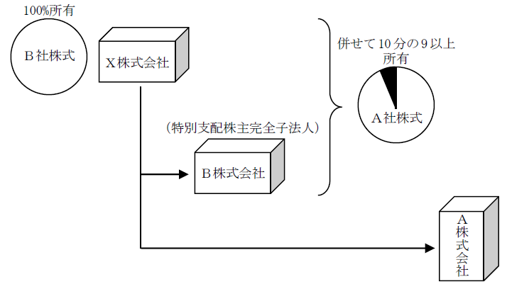
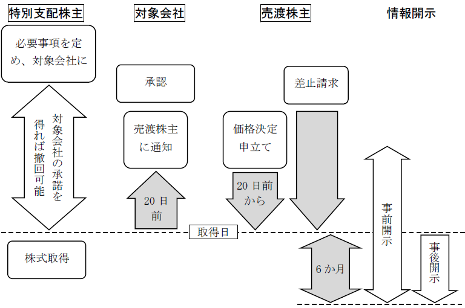

第２編 株式会社
第３章 株式
第７節 特別支配株主の株式等売渡請求
株式会社の特別支配株主は、当該株式会社の株主（当該株式会社及び当該特別支配株主を除く）の全員に対し、その有する当該株式会社の株式の全部を当該特別支配株主に売り渡すことを請求することができる（会社法179条1項本文）。
株主管理コストの削減、書面決議利用の簡易化などのメリットがある。
用語
・特別支配株主：以下の者をいう（会社法179条1項）
①株式会社の総株主の議決権の10分の9以上を有する当該株式会社以外の者
②株式会社の総株主の議決権の10分の9以上を、①の者及び①の者が発行済株式の全部を有する株式会社その他これに準ずるものとして法務省令で定める法人が有する場合の①の者
したがって、自然人や会社以外の法人でも特別支配株主となり得る。

・対象会社：株式売渡請求に係る株式を発行している株式会社（会社法179条2項）
・売渡株主：株式売渡請求によりその有する対象会社の株式を売り渡す株主（会社法179条の2第1項2号）
・売渡株式：株式売渡請求により売渡株主が売り渡す、対象会社の株式（会社法179条の2第1項2号）
【特別支配株主の株式等売渡請求の手続の流れ】

1. 手続
(1) 株式等売渡請求で定める事項
特別支配株主が株式等売渡請求をするには、次に掲げる事項を定めてしなければならない（会社法179条の2）。

※ 対象会社が種類株式発行会社である場合、特別支配株主は、対象会社の発行する種類の株式の内容に応じ、③に掲げる事項として、②の金銭の割当てについて売渡株式の種類ごとに異なる取扱いの内容を定めることができる（会社法179条の2第2項）。
なお、③に掲げる事項についての定めは、売渡株主の有する売渡株式の数（又は各種類の売渡株式の数）に応じて金銭を交付することを内容とするものでなければならない（会社法179条の2第3項）
(2) 特別支配株主の通知・対象会社の承認
特別支配株主は、株式売渡請求をしようとするときは、対象会社に対し、その旨及び上記(1)に掲げる事項を通知し、以下の機関の承認を受けなければならない（会社法179条の3第1項、3項）。
| 取締役会設置会社 | 取締役会非設置会社 |
| 取締役会の決議 | 取締役の決定(取締役の過半数の一致) |
売渡価格は特別支配株主が決定した額であるため、会社にキャッシュ・アウトの対価の相当性等について検討する機会を与えるために要求されている。
対象会社は、承認をするか否かの決定をしたときは、特別支配株主に対し、当該決定の内容を通知しなければならない（会社法179条の3第4項）。
※種類株主総会の決議
上記の承認をすることが、ある種類の株式の種類株主に損害を及ぼすおそれがあるときは、当該種類の株式の種類株主を構成員とする種類株主総会の決議（特別決議）が必要である（会社法322条1項1号の2）。
(3) 売渡株主等に対する通知等
対象会社は、承認をした場合には、取得日の20日前までに、売渡株主等に対し、特別支配株主の氏名等所定の事項を通知しなければならない（会社法179条の4第1項）。
売渡株主以外に対する当該通知は、公告をもってこれに代えることができる（会社法179条の4第2項）。
売渡株主に対する通知は、差止請求（会社法179条の7第1項）等の機会を与える機能もあるため、公告で代替することはできない。
(4) 通知又は公告がされた場合の効果
前記(3)の通知等がなされると、特別支配株主から売渡株主等に対し、株式等売渡請求がされたものとみなされる（会社法179条の4第3項）。
これは、株式等売渡請求の意思表示を、特別支配株主が売渡株主等に対して個別に行うことによる時間的・手続的コストの増大を回避し（株式会社が売渡株主の情報を把握している）、法律関係を画一的に処理しようとする趣旨である。
なお、通知等の費用は、特別支配株主の負担とされる（会社法179条の4第4項）。当該株式等売渡請求は、特別支配株主・売渡株主間の売買であるし（対象会社は取引の当事者ではない）、当該通知等が特別支配株主の意思表示に代わるものだからである。
2. 効力の発生
株式等売渡請求をした特別支配株主は、取得日に、売渡株式等の全部を取得する（会社法179条の9第1項）。
3. 株式等売渡請求の撤回
特別支配株主は、会社の承認を受けた後は、取得日の前日までに対象会社の承諾を得た場合に限り、売渡株式等の全部について株式等売渡請求を撤回することができる（会社法179条の6第1項）。
特別支配株主がその一方的意思表示によって自由に請求を撤回することを認めることは、売渡株主の利益保護の観点から妥当でないが、後発的な経営環境の変化等から撤回の必要性が生ずることがある（ex. 特別支配株主の財産状況が悪化した）ことも考慮し、対象会社の承諾を要件として撤回を認めたものである。
(1) 撤回の期限
取得日の前日までである（会社法179条の6第1項）。売渡請求の取得の効力発生後に撤回を認めると、法律関係が複雑化するためである。
(2) 撤回の範囲
| 売渡株式等の全部の撤回 | ○ （179の6Ⅰ） |
| 株式売渡請求と併せて新株予約権売渡請求をしている場合に、株式売渡請求のみを撤回（※1） | × （179の6Ⅰ） |
| 株式売渡請求と併せて新株予約権売渡請求をしている場合に、新株予約権売渡請求のみを撤回（※2） | ○ （179の6Ⅷ） |
※1 新株予約権売渡請求は株式売渡請求に付随するものであることから（会社法179条2項参照）。
※2 新株予約権売渡請求の付随的性質に反しないから。
(3) 撤回に関する通知等
(a) 特別支配株主に対する通知
対象会社が承諾をするか否かの決定をしたときは、特別支配株主に対し、当該決定の内容を通知しなければならない（会社法179条の6第3項）。
(b) 承諾した場合の通知等
対象会社が承諾をした場合には、遅滞なく、売渡株主等に対し、当該承諾をした旨を通知（又は公告）しなければならない（会社法179条の6第4項、第5項）。
対象会社が通知又は公告（会社法179条の6第4項、第5項）をしたときは、株式等売渡請求は、売渡株式等の全部について撤回されたものとみなされる（会社法179条の6第6項）。
なお、通知等の費用は、特別支配株主の負担とされる（会社法179条の6第7項）。
4. 少数株主（売渡株主）の保護
(1) 情報開示
(a) 事前開示
対象会社は、上記1.(3)の通知の日又は公告の日のいずれか早い日から取得日後6か月（非公開会社は1年）を経過する日までの間、所定の事項を記載し又は記録した書面又は電磁的記録を本店に備え置かなければならない（会社法179条の5第1項）。
売渡株主等は、対象会社に対し、営業時間内は、いつでも上記書面等の閲覧等を請求することができる（会社法179条の5第2項）。
(b) 事後開示
対象会社は、取得日後遅滞なく、株式等売渡請求により特別支配株主が取得した売渡株式等の数その他の株式等売渡請求に係る売渡株式等の取得に関する事項として法務省令で定める事項を記載し又は記録した書面又は電磁的記録を作成し、取得日から6か月間（対象会社が非公開会社である場合は1年間）、本店に備え置かなければならない（会社法179条の10第1項、2項）。
売渡株主等であった者は、対象会社に対し、営業時間内は、いつでも上記書面等の閲覧等を請求することができる（会社法179条の10第3項）。
(2) 裁判所に対する価格の決定の申立て
株式等売渡請求があった場合には、売渡株主等は、取得日の20日前の日から取得日の前日までの間に、裁判所に対し、その有する売渡株式等の売買価格の決定の申立てをすることができる（会社法179条の8第1項）。売渡価格は特別支配株主が決定した額であるため、売渡株主等が売渡価格を争うための規定を置いている。
そして、特別支配株主は、裁判所の決定した売買価格に対する取得日後の法定利率による利息を支払わなければならない（会社法179条の8第2項）。もっとも、特別支配株主は、売渡株式等の売買価格の決定があるまでは、売渡株主等に対し、当該特別支配株主が公正な売買価格と認める額を支払うことができる（会社法179条の8第3項）。利息がかさんでしまう特別支配株主の負担を軽減する趣旨である。
なお、通知等がされた後に売渡株式を譲り受けた者は、売買価格決定の申立てをすることができない（最決平29.8.30）。前記1.(3)の通知等（会社法179条の4第1項）により株式を売り渡すことが確定した後に売渡株式を譲り受けた者は、会社法179条の8第1項による保護の対象として想定されていないからである。
(3) 差止制度
以下の場合に、売渡株主が不利益を受けるおそれがあるときは、売渡株主は、特別支配株主に対し、株式等売渡請求に係る売渡株式等の全部の取得をやめることを請求することができる（会社法179条の7第1項）。
①株式売渡請求が法令に違反する場合
※定款に違反する場合は含まない。ここでは、特別支配株主の行為が問題となるが、基本的に、定款は株式会社を拘束するものであって、株主を拘束するものではないからである。
②対象会社が第179条の4第1項1号（売渡株主等への通知義務。売渡株主に対する通知に係る部分に限る）又は第179条の5（事前開示義務）の規定に違反した場合
③第179条の2第1項2号又は3号に掲げる事項（売渡株式等の対価の額等）が対象会社の財産の状況その他の事情に照らして著しく不当である場合
第８節 株式の消却・併合・分割・無償割当て・単元株
Ⅰ 株式の消却
株式の消却：株式会社がその存続中に特定の株式を絶対的に消滅させる行為
自己株式の消却（会社法178条）にのみ認められる。
自己株式を消却する場合には、以下の機関が、消却する自己株式の数（種類株式発行会社では、種類及び種類ごとの数）を定めなければならない（会社法178条1項後段、2項）。
| 取締役会設置会社 | 取締役会非設置会社 |
| 取締役会の決議 | 取締役の決定(取締役の過半数の一致) |
自己株式を消却しても他の株主に与える影響はほとんどなく、株式会社の業務の一部であると解されるため、通常の業務執行の決定機関が決定すればよいとされている。
発行済株式の総数は減少するが、資本金の額は減少しない。
また、株式が消却された場合であっても、当然には発行可能株式総数は減少しない。発行可能株式総数は、定款又は株主総会の決議により減少することを定めた場合にのみ減少する。
1. 申請情報の内容
【申請例39 株式の消却】
事例： 令和○年6月28日、別紙1の登記がなされた株式会社（公開会社）において、取締役会で、自己株式1、000株全部を消却する決議がなされ、同日、失効の手続が完了した。
別紙1
登記事項証明書の内容の抜粋
| 発行可能株式総数 | 10000株 |
| 発行済株式の総数並びに種類及び数 | 発行済株式の総数 2500株 |
| 1. 登記の事由 1. 登記すべき事項 1. 登録免許税 1. 添付書面 | 株式の消却 令和○年6月28日変更 発行済株式の総数 1500株 金3万円 取締役会議事録 1通 委任状 1通 |
|---|
(1) 登記の事由
「（自己）株式の消却」と記載する。
(2) 登記すべき事項
変更年月日と発行済株式の総数を記載する。
※この年月日は、株式の失効の手続（ex. 自己株式を株主名簿から抹消する）を終えた日と解されている。
(3) 添付書面
①取締役の過半数の一致を証する書面又は取締役会議事録
自己株式の消却を決定した取締役の過半数の一致を証する書面又は取締役会の議事録を添付する（商登法46条2項、1項）。
②委任状
(4) 登録免許税
申請件数1件につき、金3万円（登免法別表1.24(1)ツ）。
2. 登記申請の可否
自己株式を消却した場合にあっては消却した株式の数について発行可能株式総数が減少する旨の定款の定めがある取締役会設置会社において、株式消却の取締役会決議を行った場合における、当該株式消却に係る発行可能株式総数の変更の登記の申請書には、当該取締役会決議に係る議事録のほか、定款を添付しなければならないか？
→添付しなければならない。
この定款の定めがない限り、発行可能株式総数は減少しないからである。
Ⅱ 株式の併合
：数個の株式を合わせて、それよりも少数の株式とすること（会社法180条）
ex. 10株を1株とし、あるいは3株を2株とするような場合
株式の併合は、1株の単位を引き上げるための制度である。株式の投資対象としての単位を適正化するため、また合併比率を調整するため等に利用される。
会社財産に変更がなく発行済株式総数が減少するため、1株の価値は大きくなるが、その分だけ各株主の有する株式数がその持株数に応じて減少するので、株主の株式会社に対して有する地位は原則として変わりがない。
ただし、株主であった者が併合の結果、その有する株式の数が1に満たなくなったことにより株主でなくなったり、少数株主権の行使ができなくなる者が生じたりする等株主の利益を害するおそれもある。
種類株式発行会社が株式の併合をする場合、どの種類の株式をいかなる割合で併合するのかを、株式の種類ごとに定め、明らかにしなければならない（会社法180条2項3号）。すべての種類について同一の割合で併合することも可能であるが、その場合でも、その効果は各種類の株式ごとに生じる。
1. 株主総会決議
株式の併合は、株主の権利に重大な影響を及ぼすため、その都度、株主総会の特別決議で、以下の①から④の事項を定めなければならない（会社法180条2項、309条2項4号）。
①併合の割合
②併合の効力発生日
③種類株式発行会社である場合には、併合する株式の種類
④効力発生日における発行可能株式総数
株式会社は、上記①から④までの事項を、効力発生日の2週間前までに、株主及び登録株式質権者へ通知又は公告しなければならない（会社法181条）。
2. 株券提供手続
株券発行会社においては、併合に係る株式の全部について株券を発行していない場合を除き、株式の併合の効力発生日までに株式会社に対し、併合に係る株券を提出しなければならない旨を上記の効力発生日の1か月前までに公告し、かつ、株主及び登録株式質権者には、各別に通知しなければならない（会社法219条1項2号）。そして、この株券は、併合の効力発生日に無効となる（会社法219条3項）。
3. 端数処理手続
株式の併合により1株に満たない端数が生じた場合は、競売又は任意売却をして代金を分配するのが原則である（会社法235条1項）。
ex. 10株を1株とする株式の併合を行う場合に、9株しか持たない株主の保有株式数は併合後は0.9株となる。このような場合には、その端数の合計数に相当する数の株式を競売し、端数に応じて競売代金を株主に交付することになるのである。
端数処理により株主に実際に交付する代金の額は、実際に行われた競売等の結果によるため、代金額が低かった場合のリスクは株主が負うことになる。
そこで、株主を保護するため、①端数処理手続の方法（競売か任意売却か）、②代金を株主に交付する時期の見込みとその理由、③当該処理により株主に交付することが見込まれる金銭の額及び当該額の相当性に関する事項などが事前開示事項に含まれている（会社法施行規則33条の9第1号ロ参照）。
なお、株式会社自身が株式を買い取ることもできる（会社法235条2項、234条4項）。
4. 少数株主の保護
株式の併合は、キャッシュ・アウトとして活用できるため、少数株主保護の観点から、以下の制度が設けられている。
(1) 情報開示
(a) 事前開示
株式の併合をする株式会社は、株式併合についての株主総会の日の2週間前、又は、株主等への通知・公告の日のいずれか早い日から効力発生日後6か月を経過する日までの間、所定の事項を記載し又は記録した書面又は電磁的記録を本店に備え置かなければならない（会社法182条の2第1項、会社法施行規則33条の9）。
株主は、対象会社に対し、営業時間内は、いつでも上記書面等の閲覧等を請求することができる（会社法182条の2第2項）。
(b) 事後開示
株式の併合をした株式会社は、効力発生日後遅滞なく、株式の併合が効力を生じたときにおける発行済株式の総数その他の株式の併合に関する事項として法務省令で定める事項（会社施行規33条の10参照）を記載し又は記録した書面又は電磁的記録を作成し、効力発生日から6か月間、本店に備え置かなければならない（会社法182条の6第1項、2項）。
株主又は株主であった者は、対象会社に対し、営業時間内は、いつでも上記書面等の閲覧等を請求することができる（会社法182条の6第3項）。
(2) 差止制度
株式の併合が法令又は定款に違反する場合において、株主が不利益を受けるおそれがあるときは、株主は、株式会社に対し、株式の併合をやめることを請求することができる（会社法182条の3）。
株式の併合の効力は、その効力発生日に生じ、株主はその日に併合後の株式の株主となる（会社法182条）。
株式の併合により、発行済株式の総数は減少するが、資本金の額に影響を与えない。
効力発生日における発行可能株式総数が決議事項であるため（会社法180条2項4号）、その決議内容により、発行可能株式総数が変更されることがある。
1. 申請書の内容
【申請例40 株式の併合 株券不発行会社】
事例： 令和○年5月22日、別紙1の登記がなされた株式会社において、株主総会で、令和○年6月28日をもって、当該株式会社の株式2株を1株に併合すること、及び株式併合の効力発生日における発行可能株式総数を2400株とすることが決議された。なお、当該株式会社は、株券発行会社ではない。
別紙1
登記事項証明書の内容の抜粋
| 発行可能株式総数 | 2400株 |
| 発行済株式の総数並びに種類及び数 | 発行済株式の総数 600株 |
| 株式の譲渡制限に関する規定 | 当会社の株式は、取締役会の承認がなければ譲渡することができない。 |
| 1. 登記の事由 1. 登記すべき事項 1. 登録免許税 1. 添付書面 | 株式の併合 令和○年6月28日変更 発行済株式の総数 300株 金3万円 株主総会議事録 1通 株主の氏名又は名称、住所及び議決権数等を証する書面（株主リスト） 1通 委任状 1通 |
|---|
(1) 登記の事由
「株式の併合」と記載する。
(2) 登記すべき事項
変更年月日と発行済株式の総数を記載する。
※発行可能株式総数に変更が生じる場合には、発行可能株式総数の変更の登記もしなければならない。
(3) 添付書面
①株主総会議事録
株式の併合を決議した株主総会の議事録（特別決議の要件を満たすもの）。
発行可能株式総数の変更の登記もする場合は、変更後の発行可能株式総数を証する書面ともなる。
②種類株主総会議事録
種類株式発行会社において、株式の併合を行うことが、ある種類の株式の種類株主に損害を及ぼすおそれがあるときは、当該種類の株式の種類株主を構成員とする種類株主総会の議事録を添付する（特別決議の要件を満たすもの。会社法322条1項2号）。
③株主の氏名又は名称、住所及び議決権数等を証する書面（株主リスト）（商登規61条3項）
④（株券発行会社である場合）株券提供公告をしたことを証する書面等、株券提供公告関係書面
⑤委任状
(4) 登録免許税
申請件数1件につき、金3万円（登免法別表1.24(1)ツ）。
Ⅲ 株式の分割
：既存の株式を細分化して従来よりも多数の株式とすること（会社法183条）
ex. 1株を10株とし、あるいは2株を3株とするような場合
株式の分割は、1株の単位を引き下げるための制度である。1株あたりの市場価格を下げて市場性を高めたり、1株あたりの剰余金配当額を減じたり、合併の準備をしたりするために用いられる。
株式の分割を行っても会社財産は増加せず、発行済株式総数が増えるだけであり、1株の価値は小さくなる。しかし、各株主は、その増加した数の株式を自己の持株数に応じて与えられるから、株主の株式会社に対して有する割合的地位には変わりがない。
1. 総説
株式の分割をするためには、その都度、
①分割の割合及び基準日
②分割の効力発生日
③種類株式発行会社である場合には、分割する株式の種類
について、以下の機関において定めなければならない（会社法183条2項）。
| 取締役会設置会社 | 取締役会非設置会社 |
| 取締役会の決議 | 株主総会（普通決議） |
種類株式発行会社が株式の分割をする場合には、分割する株式の種類ごとに分割する割合を異なるものとすることができる。
株式の分割をする場合、その基準日の2週間前までに、当該基準日及び株式の分割に係る事項を公告しなければならない（会社法183条2項1号、124条3項）。
2. 決議機関の特則
現に2以上の種類の株式を発行している株式会社を除き、株式の分割をする際には、その分割比率の範囲内で、定款変更に本来必要な株主総会の特別決議を経ずに、以下の機関の決定で発行可能株式総数を増加することができる（会社法184条2項）。
| 取締役会設置会社 | 取締役会非設置会社 |
| 取締役会の決議 | 取締役の決定(取締役の過半数の一致) |
ex. 発行可能株式総数5万株、発行済株式総数2万株の株式会社が1株を2株に分割する場合、取締役の決定（取締役会設置会社では取締役会の決議）で、分割後の発行可能株式総数を10万株まで増加することができる。
これが認められる理由は、そのようなことを認めても発行可能株式総数を定款で定める制度の趣旨、すなわち既存株主が受ける持分割合が薄められる限度に変更がないからである。
(1) 上記の特則が認められない場合
現に2以上の種類の株式を発行する株式会社は、上記の特則が認められない。この場合、特定の種類株主の利益を害するおそれがあるためである。
(2) 注意点
発行可能株式総数の変更ができない結果、同時に行った株式の分割により、発行済株式の総数が元々の発行可能株式総数を超えてしまい、株式の分割までもがすることができないものとなってしまう可能性があることに注意する必要がある。
ex. 発行可能株式総数5万株、発行済株式総数4万株（Ａ種類株式1万株、Ｂ種類株式3万株）の取締役会設置会社において、Ｂ種類株式1株を2株に分割しようとすると、発行済株式総数は、7万株（Ａ種類1万株＋Ｂ種類6万株）となってしまい、発行可能株式総数を超えてしまうことになる。そこで、株式の分割と同時に発行可能株式総数を取締役会の決議で7万株に増加させようとしても、この株式会社は、2種類の株式を現に発行している株式会社なので、取締役会の決議では発行可能株式総数を変更することができず、結果当該株式分割ができないことになる。
3. 端数処理手続
株式の分割により1株に満たない端数が生じた場合の処理は、株式の併合の場合と同様である（会社法235条、234条2項～5項）。
ex. 2株を3株とする株式の分割を行う場合に、5株を有する株主の保有株式数は分割後は7.5株となる。このような場合には、その端数の合計数に相当する数の株式を競売し、端数に応じて競売代金を株主に交付することになる。
なお、株式会社自身が株式を買い取ることもできる（会社法235条2項、234条4項）。
基準日において株主名簿に記載・記録された株主は、分割の効力発生日に、基準日に有している株式の数に一定の割合を乗じて得た数の株式を取得する（会社法184条1項）。
なお、株式の分割は、新たに払込みをさせるものではないため、資本金は増加しない。
1. 申請書の内容
【申請例41 株式の分割 単元株式数の設定】
事例： 令和○年5月22日、別紙1の登記がなされた株式会社において、取締役会で、令和○年6月15日現在の株主が有する株式1株を、令和○年6月28日をもって、5株に分割するとともに、単元株式数を設定し、単元株式数を5株とする決議がされた。なお、令和○年6月15日現在の株主は、現在まで変動がない。
別紙1
登記事項証明書の内容の抜粋
| 発行可能株式総数 | 20000株 |
| 発行済株式の総数並びに種類及び数 | 発行済株式の総数 3000株 |
| 1. 登記の事由 1. 登記すべき事項 1. 登録免許税 1. 添付書面 | 株式の分割 単元株式数の設定 令和○年6月28日変更 発行済株式の総数 15000株 同日設定 単元株式数 5株 金3万円 取締役会議事録 1通 委任状 1通 |
|---|
(1) 登記の事由
「株式の分割」と記載する。
(2) 登記すべき事項
変更年月日と発行済株式の総数を記載する。
(3) 添付書面
①株主総会議事録又は取締役会議事録
株式の分割を決議した株主総会の議事録（普通決議の要件を満たすもの）又は取締役会の議事録
②種類株主総会議事録
種類株式発行会社において、株式の分割を行うことが、ある種類の株式の種類株主に損害を及ぼすおそれがあるときは、当該種類の株式の種類株主を構成員とする種類株主総会の議事録を添付する（特別決議の要件を満たすもの。会社法322条1項2号）。
③株主の氏名又は名称、住所及び議決権数等を証する書面（株主リスト）（商登規61条3項）
株主総会又は種類株主総会で決議したとき。具体的には、代表者作成の証明書がこれに当たる。
④委任状
※株式の分割にかかる基準日及び基準日株主が行使することができる権利の内容を公告したことを証する書面の添付は要しない。公告を要しないとき（定款で基準日を定めたとき。会社法124条3項）もあるからである。
(4) 登録免許税
申請件数1件につき、金3万円（登免法別表1.24(1)ツ）。